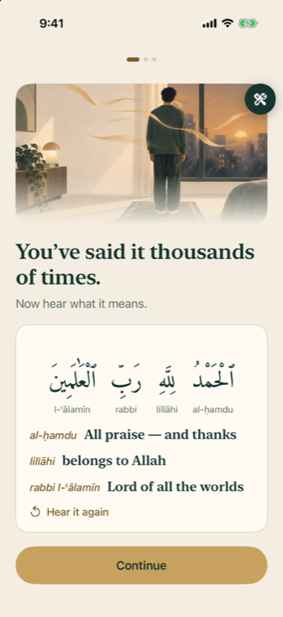
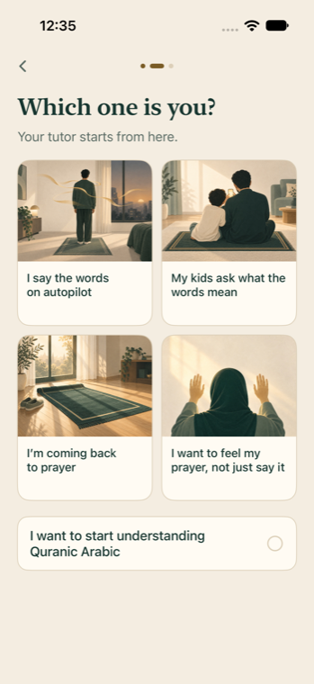
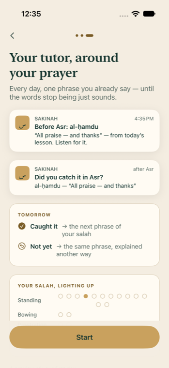
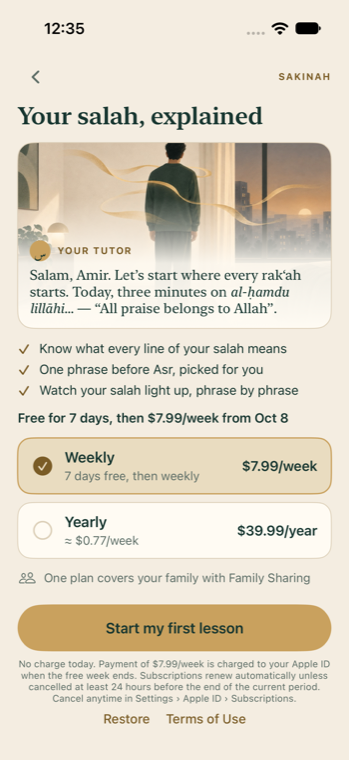
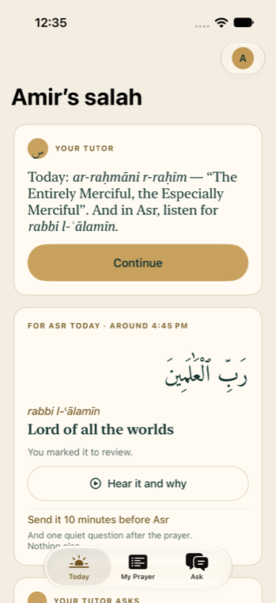
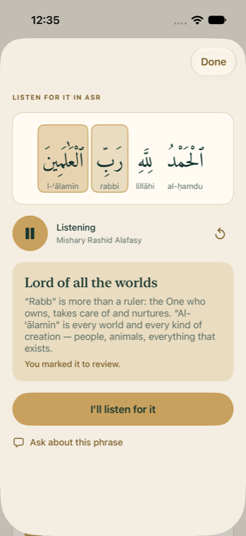

Учитель вокруг твоих намазов
Не энциклопедия, а учитель, который сам ведёт. Перед намазом, который ты выбрал, — одна фраза из того, что ты учил. После — тихий вопрос «уловил смысл?». От ответа зависит завтра. Пойманные фразы загораются на карте твоего намаза.
Как работает
JTBD и боли
Когда я стою на намазе и произношу знакомые арабские слова, хочу слышать их смысл — чтобы молитва была осмысленной, а не набором звуков.
Учитель вокруг намаза — не работа, а способ её сделать: он закрывает шаг 2, самый больной.
| Шаг главной работы | Боль сейчас | Сигнал | Что даём |
|---|---|---|---|
| 1 · Понять фразу | Перевод не связан со звуком | «Молюсь и не понимаю» — 3 977 лайков в X | Урок по фразе, 3–5 мин |
| 2 · Узнать смысл в самой молитве | Прочитал перевод — в намазе не узнаю, забывается | Возврат через 3 недели 4.00 — №1 из 20 (Jev) | Фраза перед намазом + «уловил?» после |
| 3 · Не бросить | Энциклопедия, не хочется возвращаться; серии давят | «Прогресс»-вкладка 2.27, серии 2.98 | Шаг дня предлагают сами; без серий |
| 4 · Разобраться в непонятном | ИИ-чаты путаются в религиозном | Deen Buddy: жалобы на неточность | Ask по слову, ответ по урокам с источником |
| 5 · Видеть продвижение тихо | Проценты и сертификаты = показуха (рия) | Сертификат отторгает 3.85 | Карта намаза загорается |
| Кто | Своя работа | Боль | Что даём |
|---|---|---|---|
| Вернувшиеся к практике | Вернуться без стыда | Пропустил — «всё сгорело» | «Nothing was lost», без серий |
| Родители | Объяснить ребёнку | Сам не могу ответить | Ситуация «kids» → простые формулировки |
| Студенты, реверты | Понять арабский по словам | Учебники далеки от намаза | Слова из своей молитвы, чат по слову |
Как говорим (консилиум 01.10)
| Где | Говорим | Не говорим |
|---|---|---|
| Онбординг, экран 3 | «One phrase before Asr. One question after.» — триал 3.77, «обещает больше» 1.44 | «Your tutor…» 2.24–2.70 · «guide» 2.05 |
| App Store, кадр 1 | «You've said it thousands of times. Now understand every word.» | — |
| App Store, кадр 2 | «Before Asr, one phrase picked for you. After, did you catch it?» — экран блокировки. Набор: скачать 3.95 | «Your private teacher» — «обещает больше» 3.19 |
| App Store, кадр 3 | «Watch your salah light up» — карта | Без учителя в наборе скачать 3.59 |
Заметки на Today — подбор по прогрессу, не живой человек и не ИИ; ИИ только в Ask. Jev: 28 синтетических персон, два прохода; Codex вслепую — то же: механика вместо персонажа, фича на 2-м кадре.
Воронка: смотреть, а не отвечать






| Где | Что спрашиваем |
|---|---|
| До пейволла | Одно: «Which one is you?» картинкой |
| Конец первого урока | Какой намаз самый спокойный (по умолчанию Асер) + уведомления |
| Today, день 1 | Какую суру читаешь после Фатихи |
| Today, со 2-го дня | По одной фразе в день: «знаешь, что значит…?» |
Что показал Jev
| Турнир | Победитель | Было / проиграло |
|---|---|---|
| Возврат через 3 недели | Учитель вокруг намазов 4.00 | Вкладка «Прогресс» 2.27 · Duolingo-серии 2.98 |
| Онбординг (нетерпеливый человек) | 3 экрана, 3 нажатия 3.88 | Анкета 6 экранов 2.50 · дойдёт 1.87 |
| Герой пейволла | Своя картинка + заметка учителя 4.03 | Маршрут уроков 3.98 · картинка без результата 3.41 |
| Картинки ситуаций | Каждая когорта узнаёт свою | Без картинки доверие 2.55 → ~4.1 |
Jev — синтетические персоны (28, 7 когорт, два прохода с обратным порядком), показывает порядок, а не конверсию. Не делаем: серии, проценты, сертификаты, «последний день отмены», лица на картинках. Источники в репозитории: research/killer-feature-2026-10-01, competitors-learning-2026-10-01, onboarding-consilium-2026-10-01, onboarding-visual-2026-10-01.
Обновлено 1 октября 2026 · сборка TestFlight 1.0 (2), следующая — с новым онбордингом.